Explainable-AI note workspace · MS-HCDE capstone · React and Supabase
A thinking tool
that shows its work.
People don’t lose ideas when they write them down. They lose them on the way back.
The one thing I kept seeing across six interviews.
- 30commits, all mine, across the capstone build
- 8surfaces in one workspace
- 6.5out of ten, on my own hard audit
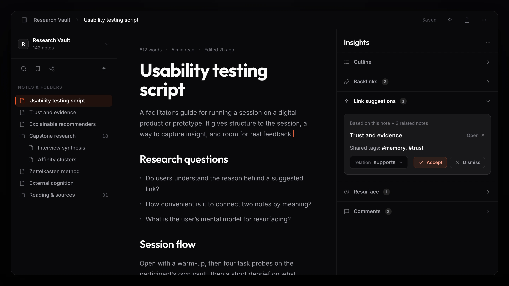
2880 × 1620The three-pane workspace: library, note editor, and the Insights railSix knowledge workers lost ideas, forgot their own note titles, and gave up on search in under thirty seconds. So I designed a workspace where capture is effortless, connection happens by meaning, and every AI nudge earns trust with a one-line reason and, with transparency on, the source notes behind it.
Ideas don’t die at capture. They die on the way back.
Across every interview the same loop kept breaking. People wrote the idea down, then couldn’t find it, couldn’t link it, or couldn’t trust the AI that tried to help them with it.
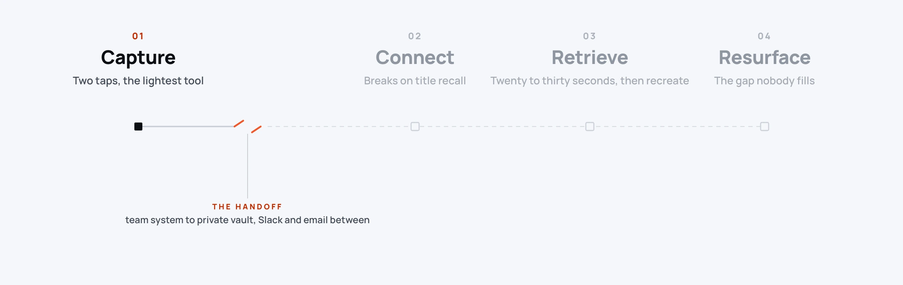
If I still could not find it I would stop and write a new note. That is the painful truth.A participant, when the search runs out.
Problem discovery first. Solutions last.
Every decision had to trace back to an observation, a quote, or a measured friction point. A finding only reached the requirements if it showed up in at least two of three independent sources.
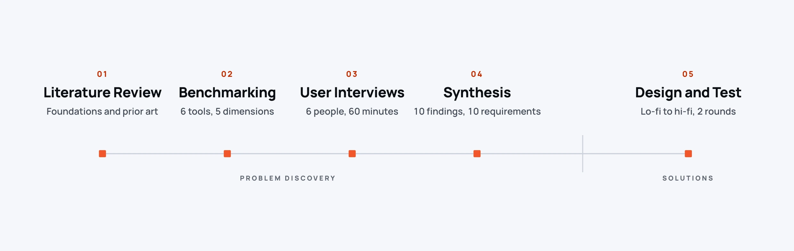
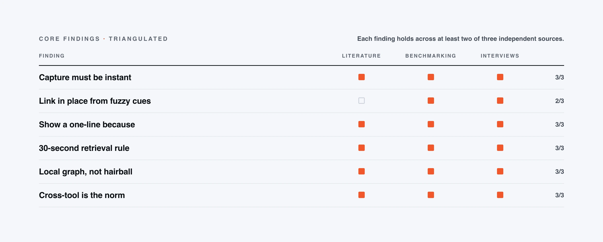
What today’s tools get right, and wrong.
We ran the same tasks through six networked-note tools, three established note apps and three AI-native ones, and assessed each on the same five dimensions. Two columns came back thin across every one of them: nobody surfaces the right note at the right moment, and nobody shows the proof behind a suggested link. Those two gaps became the product.
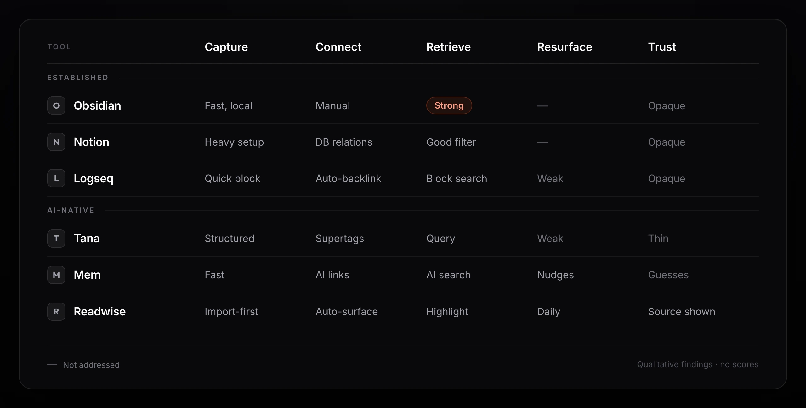
2560 × 1600Six tools assessed across five dimensions, with a verdict per cellI tried Mem for a month because I liked the idea of asking questions across my notes, but I ran into trust issues when it guessed wrong about a link, so I stopped.A participant, on quitting an AI tool that guessed wrong.
Six people. Six setups. One story.
Sixty minutes each, screen-sharing their real vaults, thinking aloud through four task probes in the tools they already use: make two notes relate, find a note they could not name, judge what else on the page they would trust, and explain why two things belonged together. No hypotheticals. Every observation traces to a real moment of friction.
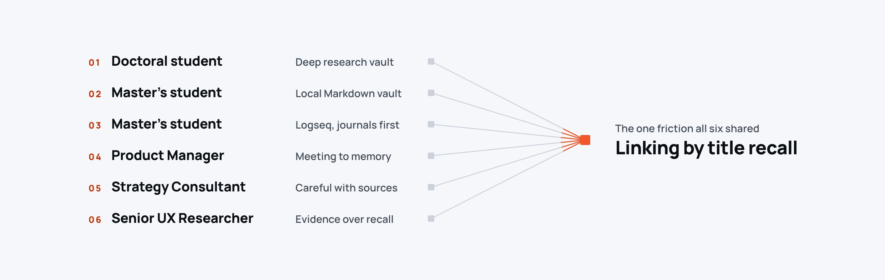
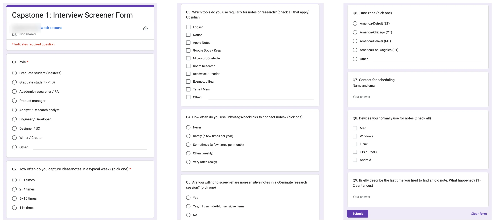
The screenerThe real Google Form we recruited the six participants withIf I type a phrase the system should propose a handful of precise candidates with a short because.A participant, on how linking should feel.
I never tag on the phone. It slows me down.A participant, on the front door.
The trust ladder.
When we asked what would make you trust this suggestion, participants ranked evidence types in a strikingly consistent order. I turned that order into the design of every AI surface in Tho8.
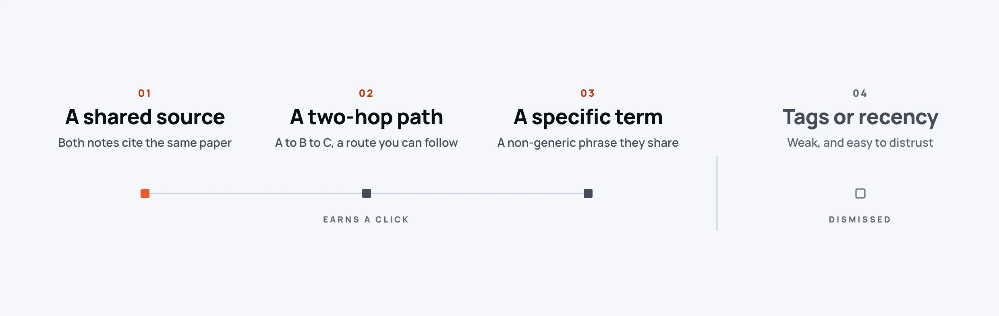
Seeing the citation match gives me confidence. If both notes cite the same paper I trust the link.A participant, ranking the evidence.
Four loops. One surface.
Knowledge work isn’t a funnel. It is four nested loops that reinforce each other, and each one has an effort threshold people walk away from the moment you cross it. If any loop breaks, the whole thing feels broken.
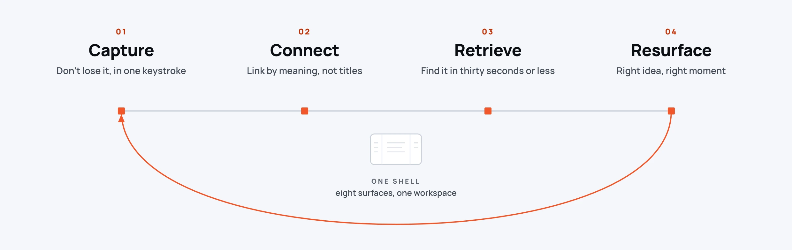
A three-pane shell anchors the product: library on the left, note canvas in the middle, intelligence panel on the right. Eight surfaces, one coherent workspace. AI never opens in its own app. It lives next to the cursor.
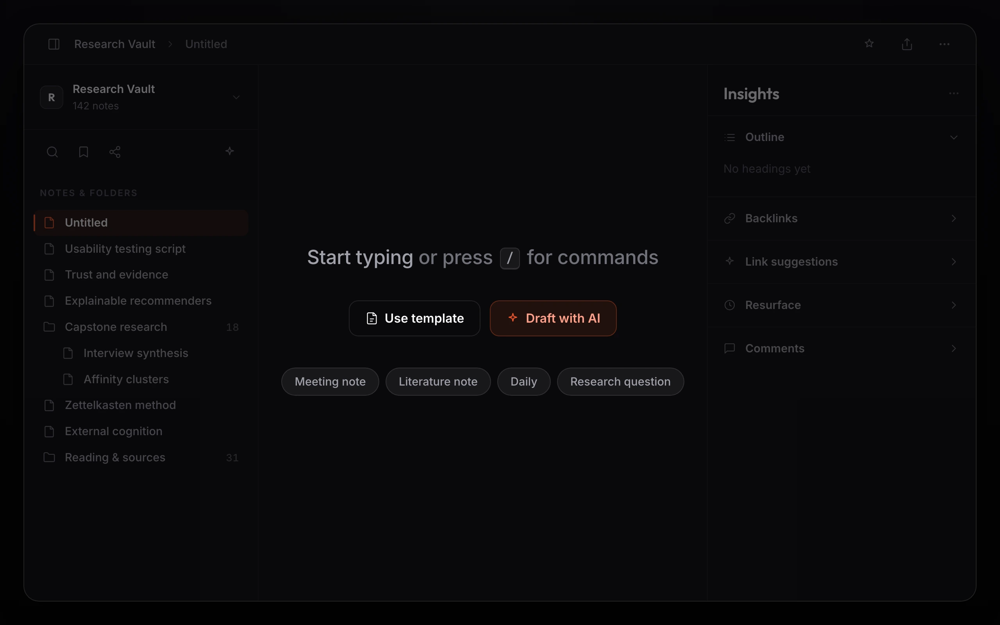
2560 × 1600A new note on Cmd+N: start typing, use a template, or Draft with AINo suggestion is a black box.
Every suggestion starts from a real similarity match, not a hunch. It shows the basis in one line: the tags two notes share, a note they both touch, or a plain concept match. Open Details and it names the tag the link leans on. Turn on Transparency and the source notes appear as chips you can open. No confidence percentage, no black box, just the match, shown plainly.
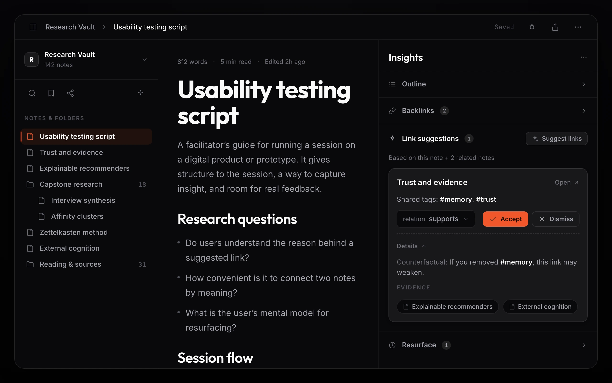
2560 × 1600The Link suggestions rail card: a because, a relation, Accept or Dismiss, Details, and evidence chipsI put the reason in the data model, not the copy. Every suggestion is stored with its because, its evidence notes, and the tag it leans on, all computed from the real match. So the reason is the mechanism itself, not an AI story written afterward to sound convincing. It lives where it cannot drift from what the interface claims.
Find it, or ask about it, without leaving the keyboard.
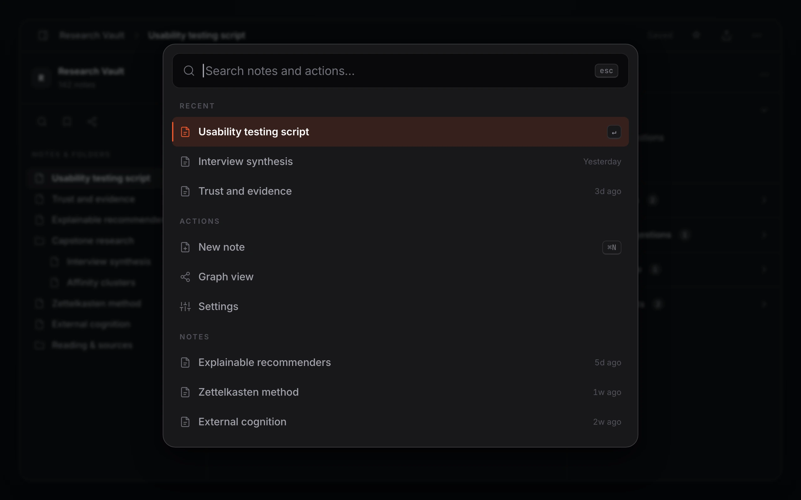
2560 × 1600Cmd+K: search notes and commands, grouped into Recent, Actions, and NotesFind it in under thirty seconds.
Cmd+K opens a fuzzy search over every note and command, grouped into Recent, Actions, and Notes, with the matched letters lit as you type. Built to the thirty-second budget the research demanded. People gave search one query and one hop before they gave up and rewrote the note, so finding it has to land inside that. Enter jumps straight to the note.
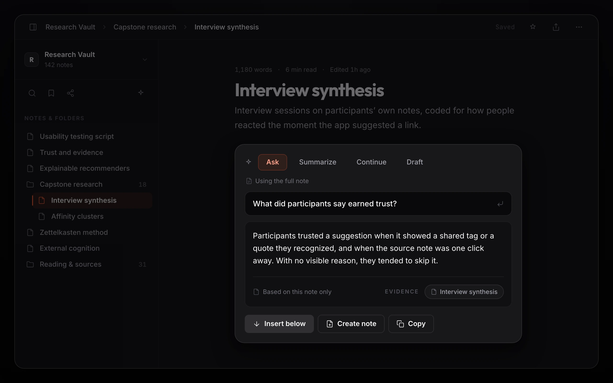
2560 × 1600The editor AI panel: Ask, Summarize, Continue, or Draft, with an answer grounded in the noteAsk the note you are on.
The editor’s AI panel runs on the note in front of you, Ask, Summarize, Continue, or Draft. The answer comes back in a card labeled Based on this note only, with the source note shown when Transparency is on. One click inserts it below, replaces the selection, spins it into a new note, or copies it.
A graph you can actually stand in.
The graph is global, but it never throws the whole hairball at you. Click a node and it lights up with its neighbors while the rest dims; a Focused Node panel fills with the note, its connections, and a place to generate ideas. The full graph overwhelmed people in testing, so focus and a clear way out became the point.
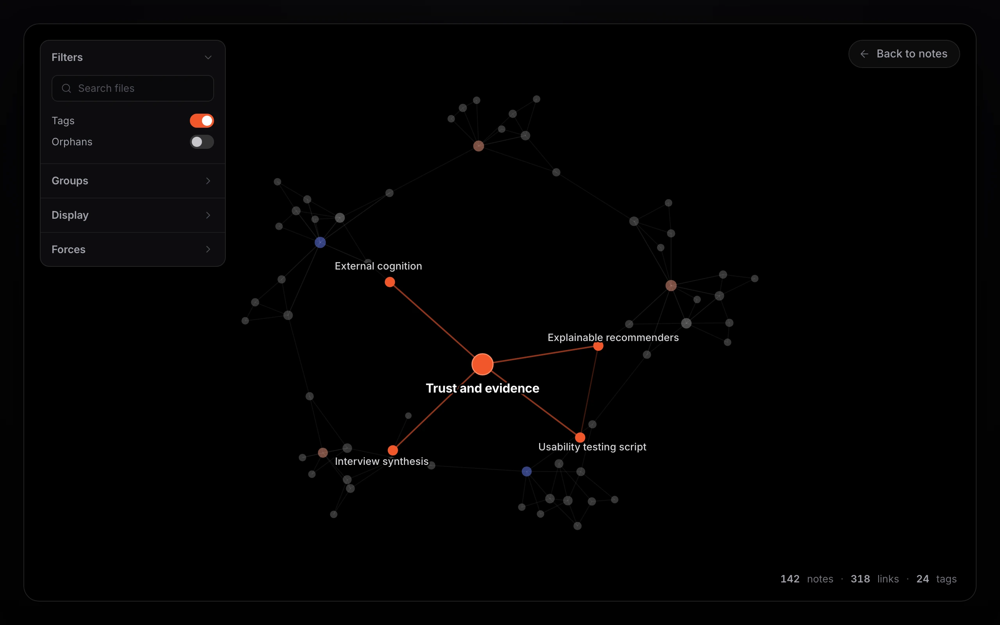
2560 × 1600The global graph with a node focused: neighbors lit, the rest dimmed, and the Focused Node railIn the first build the graph rendered a black screen and crashed the app. I found it in my own audit, and wrapped the graph view in an error boundary with a real fallback, a “Graph view crashed” message with a way back to your notes, instead of a dead screen. The crash became a caught, recoverable state, not a patch.
The global graph is too chaotic for me … Local graph plus backlinks is enough.A participant, on the global graph, and why Backlinks carry the load.
From the graph rail, Explore Related Thinking. Select a note and it grows ideas from that note and its neighbors, each a card with a title, a one-line summary, and one button to turn it into a note. It reads as connecting what you already wrote, not conjuring something new.
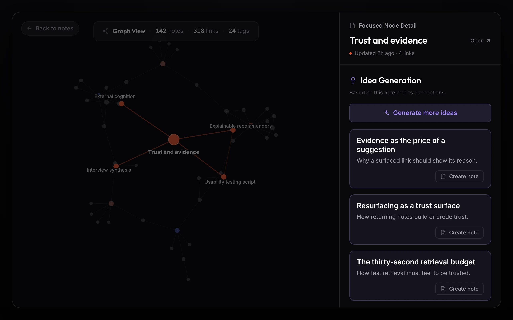
2560 × 1600AI Ideas from a selected note: a title, a summary, and a Create note button on eachWhat the testing changed.
Two rounds of moderated testing, V1 to V2. The same confusions surfaced again and again, and each one pointed at a specific fix. I shipped the fixes, then tested the build again.
Six people is a small sample, and no one has used this in the wild, so I will not dress it up as a measured win. What two rounds of testing bought was precision: the confusion was specific, so the fixes could be too.
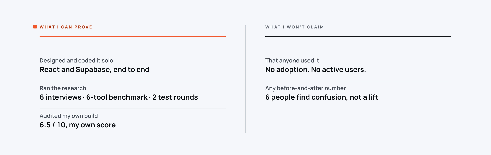
I tested with six people and turned their confusion into specific fixes. A save state they could finally see. A graph that stopped crashing. A reason attached to every suggestion. That part is real, and it is the part worth judging.
A quiet interface for loud thinking.
Calm near-black surfaces so the words stand out. Two accents, and only two: Ember orange for the brand, selection, focus, and the live highlight, and a violet for the generative-AI moments. The reasons themselves, the because and its evidence, stay in neutral zinc, so a reason reads like a fact and not a pitch. I built the system alongside the UI, not after it, so every screen spoke the same language as it was drawn.
Fixes from the audit landed in the tokens, not the screens. A failing contrast value became a token change every component inherited. A missing error state became a reusable error boundary. That is how the same defect does not come back.
Trust is a design problem, not a model problem.
The thing I had backwards at the start was treating trust as something the model earns by being good enough. It isn’t. People believed a suggestion the moment they could see why it was there, and ignored it when they couldn’t, however good it was underneath.
So the real work was never the model. It was making the reason visible, making the save state visible, making the graph start somewhere a person could actually stand. Small, unglamorous things. That is where the trust came from.
The fastest way to find what is broken is to measure your own work a new way each round, not to walk the same screens again. Six people, two rounds, and a hard look at my own build taught me more than another week of polish would have.
By the bar I hold now, a few things date it. An accent glow token that should have stayed neutral. A capstone deck that leaned on stock AI imagery. The research rigor and the systems discipline are the parts that hold up, and they are the parts I kept.
A working prototype, built end to end, kept private.